2/20
鎌倉・横須賀・横浜3市連携ハッカソン
成果発表会＆フューチャーセッション
2/20
鎌倉・横須賀・横浜3市連携ハッカソン
成果発表会＆フューチャーセッション
昨年12月5日に八景島からスタートした鎌倉、横須賀、横浜3市連携アイディアソン・ハッカソンシリーズですが、2月20日（土）午後、横浜金沢区大会横浜市立大学で総合大会が開催されフィナーレを迎えました。生憎の雨模様にも関わらず、総勢30名以上の方に参加いただきました。
前半（プレゼンテーション＆審査会）
前半は各市から選考された全6作品は以下に紹介するようなバラエティーに富んだユニークな作品が揃いました。そして、チームの代表にプレゼンテーションしてもらいました。
「オープンデータ」×「カセキホリダー」×「Ingress」×「遺跡から学ぶ」から、横浜の史跡がマップ上で一目で認識できる。ひいては、地域活性を目指すアプリ。Google Mapと連携し経路検索やスタンプラリー（行った遺跡のスタンプが入手できる）などの機能がある。地元の人がターゲット。
最後に「考古学に興味を持つ人の裾野を広げたい」としめくくりました。
オープンデータとbeaconを活用し地域における災害時の避難ルート、安否情報を必要とする人や、介護などを必要とする、疾病のある高齢者や妊婦など「困っている人」の生命リスク時に助けを受けるのに必要な情報を届けるシステム。（例：倒れた高齢者の位置情報がサーバーに行く→サーバーから近くの人の携帯電話に通知が行く→本人が自分も名前も言えない状況でもあらかじめ登録している緊急連絡先に助けを求められる）
実際にビーコンを用いたデモを行いました。
駆逐艦や軽巡洋艦、重巡洋艦など擬人化したキャラクターを育成するシミュレーションゲーム「艦隊これくしょん」が話題になっている。今回は男性がターゲットではなく、オタク系女子をターゲットにしたアプリ開発の企画。オタク系女子はハマったものに多額のお金をつぎ込む傾向があるため、横須賀の軍艦を擬人化したイケメン男子のキャラクターを作り、そのキャラクターがアプリを利用する女子をデート気分にさせて、横須賀へ誘導し、市内周遊やグルメ店舗での食事で消費活動も促す。消費活動を促す仕掛けとしてクーポン機能と連動させる。
代表者欠席のため、代理で横須賀市役所の千葉さんがプレゼンテーションを行いました。
横須賀のおいしいグルメ（ヨコスカネイビーバーガー、ヨコスカチェリーチーズケーキ、よこすか海軍カレー）を食べたいけど、カロリーと量が気になる…だったら歩いてお腹をすかせようという発想に、市内周遊とグルメの店舗めぐりをあわせたアプリ開発の企画。アプリでは設定したコースを歩いた距離や消費カロリー等のデータ表示にクーポン機能を連動。
スターウォーズのパロディーネタを仕込むなど、笑いが絶えないプレゼンテーションでした。
3Dスキャンでの道路のバリアフリーデータを取得するとともに、一般の方にもレンタサイクル、レンタセグウェイ、レンタル車椅子などを利用する際にポイント制でインセンティブをつけ、ドライブレコーダーなどのIoTデバイスを活用してデータの収集を行い、まち案内等に活用する。
寸劇でアイディアのポイントをわかりやすく伝えました。
ゲームアプリのアイデア。バリアフリー化だけを焦点にするのではなく、今あるバリアをクリアする（体験する）ことに焦点をあて、クリアに応じたアバターのレベルアップと、エリアの制覇の可視化によるゲームアプリを作る。バリアのデータの収集を行うとともに、周囲の助けをもらえるような呼びかけ機能を持たせることで、人の温かさでバリアをクリアしていくことを狙いとする。
高校生もプレゼンテーションに参加しました。
審査員は、國原 章弘（横浜市金沢区長）、比留間 彰（鎌倉市経営企画部長）、蒲谷 弘幸（横須賀市経済部副部長）、宮田正秀（カマコン）、相澤 謙一郎（ヨコスカバレー）、小林 巌生（Code for YOKOHAMA）（以上、敬称略）が担当。次のような評価ポイントで審査を行いました。
各チームのプレゼンテーションは本大会に向けて準備してきた努力が表れたとても素晴らしいものでした。審査会では各作品の得点が僅差であり、優劣付けがたいということで、急遽、審査員特別賞が設けられました。
最優秀賞「スカレーウォーカー」
優秀賞「助けられるかも」
審査員特別賞「オープンデータを活用した未来のカマクラ」
横浜市金沢区長からの講評では、各作品のできの素晴らしさ、そして、鎌倉、横須賀、横浜のそれぞれの歴史上のかかわりについて触れられ、今後もこうした連携を発展させていきたい旨が語られました。
横浜市金沢区長 國原 章弘さん
鎌倉市経営企画部長 比留間 彰さん
横須賀市経済部副部長 蒲谷 弘幸さん
後半（ワークショップ）
後半はCode for YOKOHAMA下山さんのファシリテーションでワークショップが行われました。三浦半島を舞台どのように広域連携しながら地域課題を解決するか、三浦半島を盛り上げるかといったことをテーマに6チームに分かれて話あいました。
ファシリテーターは、Code for YOKOHAMAの下山さん。
三浦半島の大きな地図に付箋をはりながら、お勧めスポットなどを教えあいました。
チームごとに、アイディアを話会いました。
ワークショップの発表もグラフィックレコーディングのチームが綺麗に整理してくれました
オリンピック、パラリンピックに向けてゲーミフィケーションを応用したアプリの仕掛け。既存の観光系のオープンデータを活用。また、鉄道会社とタイアップするなど、広域連携に向けたアイディアも。

三浦半島に散らばるデートスポットをつないで紹介する仕組みを作るアイディア。カップルに喜ばれそうなお店の情報、また、道案内など経路案内の実現については企業とも連携して実現。

受賞作品「助けられるかも」を発展させるアイディア。ビーコンを普段から有効活用する方法として、観光客をターゲットとした観光地の混雑状況のお知らせ機能やクーポン発行機能などを提案。
都心部へのアクセスのしやすさ、しにくさから、三浦半島の南北問題を提起。解決するためには、南北の地域資源の情報を見える化し、もっと発信する必要がある。アプリを活用したり、メディアを活用した情報発信も工夫する必要性を提案。
こちらも、三浦半島の南北問題を指摘。三浦半島の魅力をもっと知ってもらいたい。港関連の情報を充実させるとともに、みずからも、船を使った三浦半島周遊ツアー等の事業化をしてみたい。
アクセスが悪いことと、少子化問題に着目。横浜でやったようなパーソナルモビリティーを導入してはどうか。また、地域資源を活かした街コンのアイディアも。
すべての発表が終了した後は、中村 隆幸（金沢区地域力推進担当課長）さん、関口 昌幸（横浜市政策局政策課担当係長）からそれぞれ講評をいただきました。
「もとよりすばらしいアイディアが選出されていたが、短時間にもかかわらずワークショップを通じてさらに良いアイディアに発展したことに驚いた」（中村）
「横浜は川崎に地価で抜かれた。東京への距離が影響していると思うが、東京への距離にまさる価値を今回のような広域連携の中から生み出していきたい」（関口）
とても、和やかな雰囲気の中イベントは閉会となりました。みなさん、おつかれさまでした！